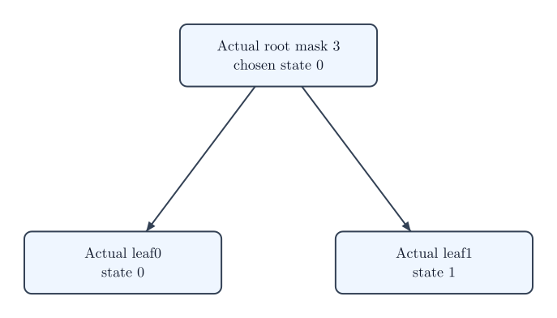
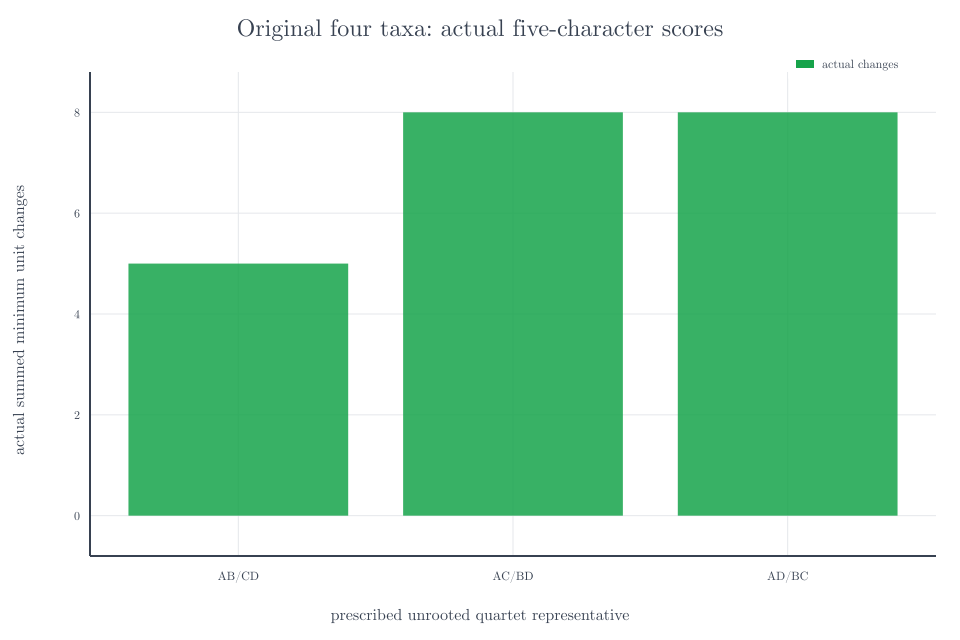
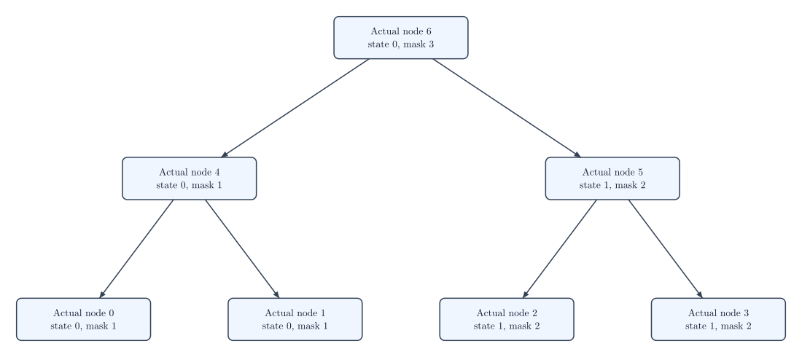
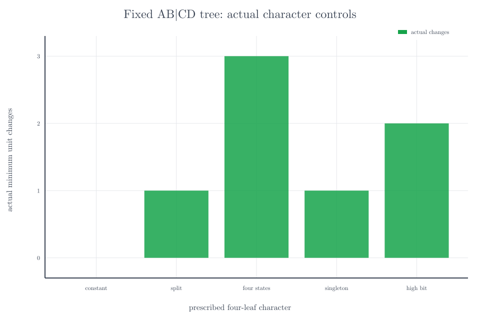

Fitch small parsimony
Abstract
Given observed leaf states and a fixed tree, small parsimony finds ancestral states requiring the fewest unordered unit-cost edge changes. Fitch’s algorithm combines child state sets in postorder, then a top-down pass supplies one minimum-change assignment. We expose both actual passes, retain the original five-character four-taxon example, and distinguish scoring a topology from searching a space of trees.
Derive the set recurrence and a matching witness
Each leaf contributes its observed singleton state set and zero internal changes. At an internal binary node, read its two completed child sets A,B. If their intersection is nonempty, retain the intersection without adding a change. Otherwise retain their union and add one change. These are actual bitwise operations on uint32 masks for states0..31, not a continuous optimization.
A child set describes root states that attain that child subtree’s minimum. A state outside the set costs at least one extra change when accounting for the connecting edge. If A and B intersect, a common state attains both minima with no connecting penalty. If they are disjoint, at least one extra change is unavoidable; choosing a state in either set and changing the other connecting side attains exactly one. Induction establishes the minimum score and the actual feasible set at every node.
To exhibit an assignment, choose the smallest available root state. For each child, retain its parent state if the child mask contains it; otherwise choose the child mask’s smallest state. Count actual parent/child inequalities. The implementation checks that this witness change count equals the postorder union score. The chosen witness is one optimum, not a posterior distribution or a unique reconstruction.
Two leaves, one actual union
A three-node tree with leaf states0 and1 forces one change. The actual root mask contains both states; the deterministic witness chooses0, leaving one unchanged edge and one changed edge. The table shows every real postorder write.
#include <dm/dm.hpp>
int main() {
std::filesystem::create_directories("build");
dm::algorithms::ParsimonyTree tree{2, {{-1, -1}, {-1, -1}, {0, 1}}};
auto t = dm::algorithms::fitch_trace(tree, {0, 1, -1});
std::print("| actual node | actual left mask | actual right mask | actual intersection | written mask | " "score before | score after |\n| ---: | ---: | ---: | ---: | ---: | ---: | ---: |\n");
for (auto &s : t.steps)
std::print("| {} | {} | {} | {} | {} | {} | {} |\n", s.node,
s.left_mask, s.right_mask, s.intersection, s.mask, s.before,
s.after);
dm::graphics::Diagram d;
d.node("root", {3, 4},
std::format("Actual root mask {}\nchosen state {}",
t.analysis.masks[2], t.analysis.states[2])).node(
"left", {0, 0},
std::format("Actual leaf0\nstate {}", t.analysis.states[0])).node(
"right", {6, 0},
std::format("Actual leaf1\nstate {}", t.analysis.states[1])).edge(
"root", "left").edge("root", "right");
d.save_svg("build/parsimony_tiny.svg");
}| actual node | actual left mask | actual right mask | actual intersection | written mask | score before | score after |
|---|---|---|---|---|---|---|
| 0 | 0 | 0 | 0 | 1 | 0 | 0 |
| 1 | 0 | 0 | 0 | 2 | 0 | 0 |
| 2 | 1 | 2 | 0 | 3 | 0 | 1 |

Original four taxa and five characters
Retain the original leaf-state columns0011,0011,1100,0100,0001 across taxa A,B,C,D. The native helpers build the same seven-node layouts and complete columns with ignored internal entries. Compare the three unrooted quartet topologies using balanced rooted representatives AB|CD, AC|BD, AD|BC. This is the complete set of unrooted binary four-taxon splits, not a claim that there are only three rooted four-taxon binary trees.
Independent characters add their actual minimum scores, with equal unit change costs and no branch-length weighting. The report compares these three prescribed candidates; the library’s scorer does not implement a general maximum-parsimony topology search. The artificial columns are the original hand-checkable fixture, not a claimed empirical DNA alignment.
#include <dm/dm.hpp>
int main() {
std::filesystem::create_directories("build");
auto cols = dm::algorithms::parsimony_demo_columns();
std::vector<std::string> labels{"AB/CD", "AC/BD", "AD/BC"};
std::vector<dm::algorithms::ParsimonyTree> trees{dm::algorithms::parsimony_four_taxon_tree(0, 1, 2, 3),
dm::algorithms::parsimony_four_taxon_tree(0, 2, 1, 3),
dm::algorithms::parsimony_four_taxon_tree(0, 3, 1, 2)};
std::vector<double> totals;
std::print("| prescribed quartet | site0 | site1 | site2 | site3 | site4 | actual total |\n| --- | ---: " "| ---: | ---: | ---: | ---: | ---: |\n");
for (std::size_t i = 0; i < trees.size(); ++i) {
auto scores = dm::algorithms::parsimony_site_scores(trees[i], cols);
auto total = dm::algorithms::parsimony_score(trees[i], cols);
totals.push_back(total);
std::print("| {} | {} | {} | {} | {} | {} | {} |\n", labels[i],
scores[0], scores[1], scores[2], scores[3], scores[4], total);
}
auto p = dm::graphics::RPlot::barplot(totals, labels, "actual changes");
p.x_label("prescribed unrooted quartet representative").y_label(
"actual summed minimum unit changes").title("Original four taxa: actual five-character scores").save_svg("build/parsimony_original.svg");
}| prescribed quartet | site0 | site1 | site2 | site3 | site4 | actual total |
|---|---|---|---|---|---|---|
| AB/CD | 1 | 1 | 1 | 1 | 1 | 5 |
| AC/BD | 2 | 2 | 2 | 1 | 1 | 8 |
| AD/BC | 2 | 2 | 2 | 1 | 1 | 8 |

Trace an actual ancestral assignment
The first original character gives A=B=0 and C=D=1. Read the actual masks and chosen states from one native run on AB|CD. The tree diagram displays each actual chosen state; the edge table distinguishes exact equal/unequal choices. Every observed leaf is retained, and the counted edge changes attain the computed lower bound.
Ancestral states remain ambiguous when masks have multiple bits. The smallest-bit tie rule is an explicit reproducibility convention, not biological evidence for the smaller numeric label. Relabelling states preserves scores, while this tie convention can select a correspondingly different representative optimum.
#include <dm/dm.hpp>
int main() {
std::filesystem::create_directories("build");
auto tree = dm::algorithms::parsimony_four_taxon_tree(0, 1, 2, 3);
auto t =
dm::algorithms::fitch_trace(tree,
dm::algorithms::parsimony_demo_columns().front());
std::print("| actual parent | actual child | chosen parent state | chosen child state | actual changed " "edge |\n| ---: | ---: | ---: | ---: | --- |\n");
for (auto &e : t.edges)
std::print("| {} | {} | {} | {} | {} |\n", e.parent, e.child,
e.parent_state, e.child_state, e.changed);
std::array<dm::graphics::DiagramPoint, 7> positions{{{0, 0}, {6, 0},
{12, 0}, {18, 0},
{3, 4}, {15, 4}, {9, 8}}};
dm::graphics::Diagram d;
for (std::size_t i = 0; i < positions.size(); ++i)
d.node(std::to_string(i), positions[i],
std::format("Actual node {}\nstate {}, mask {}", i,
t.analysis.states[i], t.analysis.masks[i]));
for (auto &e : t.edges)
d.edge(std::to_string(e.parent), std::to_string(e.child));
d.save_svg("build/parsimony_witness.svg");
}| actual parent | actual child | chosen parent state | chosen child state | actual changed edge |
|---|---|---|---|---|
| 6 | 4 | 0 | 0 | false |
| 6 | 5 | 0 | 1 | true |
| 4 | 0 | 0 | 0 | false |
| 4 | 1 | 0 | 0 | false |
| 5 | 2 | 1 | 1 | false |
| 5 | 3 | 1 | 1 | false |

Checked trees, exact masks and work
The input is a rooted full binary tree: leaves have exact marker(−1,−1); every internal node has two distinct valid children; the root has no parent; every other node has exactly one; every supplied node is reachable. Validate all fields before indexing or shifting, including malformed disconnected components. An empty tree is root−1 with no nodes and an empty state vector. Each nonempty column has exactly N node-indexed entries; internal values are ignored, but every leaf state must be0..31. State31 uses a defined unsigned32-bit shift, avoiding the old unchecked invalid-shift path.
Both passes are iterative. Validation, postorder scoring and top-down witness assignment take O(N) time and O(N) returned/working storage. For C characters, complete tree/all-column validation precedes any evaluation, and scoring takes O(N(C+1)) time with reusable structural order. Summed int scores reject overflow. This is unordered unit-cost parsimony, not a likelihood model, weighted Sankoff recurrence or a general optimizer over tree space.
Complete capture admits7N logical entries for N>0, or one for an empty tree: root, two child-id scalars per node, input states, actual masks/chosen states, node-step records and N−1 edge records. Default limit is one million; zero disables only that optional cap. Fields, vector headers, capacities, runtime traversal state and bytes are excluded. Validation and admission precede copying/evaluation.
#include <dm/dm.hpp>
int main() {
std::filesystem::create_directories("build");
auto tree = dm::algorithms::parsimony_four_taxon_tree(0, 1, 2, 3);
std::vector<std::array<int, 4>> patterns{{0, 0, 0, 0}, {0, 0, 1, 1},
{0, 1, 2, 3}, {0, 0, 0, 1},
{0, 31, 0, 31}};
std::vector<std::string> labels{"constant", "split", "four states",
"singleton", "high bit"};
std::vector<double> scores;
std::print("| prescribed character | actual score | actual nodes | actual unions | actual witness " "changes | capture entries |\n| --- | ---: | ---: | ---: | ---: | ---: |\n");
for (std::size_t i = 0; i < patterns.size(); ++i) {
auto t =
dm::algorithms::fitch_trace(tree,
dm::algorithms::parsimony_four_taxon_column(patterns[i]));
scores.push_back(t.analysis.score);
std::print("| {} | {} | {} | {} | {} | {} |\n", labels[i],
t.analysis.score, t.analysis.work.nodes,
t.analysis.work.unions, t.analysis.work.changes,
t.captured_entries);
}
auto p = dm::graphics::RPlot::barplot(scores, labels, "actual changes");
p.x_label("prescribed four-leaf character").y_label("actual minimum unit changes").title("Fixed AB|CD tree: actual character controls").save_svg("build/parsimony_controls.svg");
}| prescribed character | actual score | actual nodes | actual unions | actual witness changes | capture entries |
|---|---|---|---|---|---|
| constant | 0 | 7 | 0 | 0 | 49 |
| split | 1 | 7 | 1 | 1 | 49 |
| four states | 3 | 7 | 3 | 3 | 49 |
| singleton | 1 | 7 | 1 | 1 | 49 |
| high bit | 2 | 7 | 2 | 2 | 49 |

Verification and references
Native tests exhaust81 three-state four-taxon columns on all three quartet
representatives and enumerate every one of27 internal-state assignments
independently. They compare exact minimum scores/root masks, actual postorder
reads/writes, every chosen witness edge, operation counts and complete quotas.
Original five-site scores5/8/8, safe state31, empty trees, malformed complete
structures/columns, ignored internal values and ownership are covered.
A100001-node highly skewed full binary tree checks iterative execution. The
shared ten-report batch passes 71 CTest cases, 29 directly instrumented
ASan/UBSan cases, 130 compiled and executed public examples, 598/598 scoped
documentation definitions and ten representative hovers. Independent Python
arbitrary-precision, hashlib, sorted-window, RNG, polynomial, graph and
full-assignment references verify 224,229 actual records. Frozen comparisons
preserve ordinary legacy outputs, including selected clique identities, original
density graphs and memetic partitions. Twelve checkout headers and twelve
identically installed headers compile independently; an installed-header native
consumer links and runs. All four complete programs and all four native figures
pass execution and visual review, and HTML/Markdown exports preserve computed
results and identical image bytes. Receipts:
build/mepml-conversion/batch-224-233/.
Fitch (1971), Toward Defining the Course of Evolution: Minimum Change for a Specific Tree Topology, Systematic Zoology20(4),406–416, doi:10.2307/2412116. The implemented objective and fixed-topology limitation are explicit above.
The original Fitch paper scan retains the fixed-topology problem statement and intersection/union construction.